用户如何查看账户内IHT数量、如何查询IHT锁定信息及如何取回被锁定的IHT--操作教程
所需环境
用户如何查看账户内的IHT
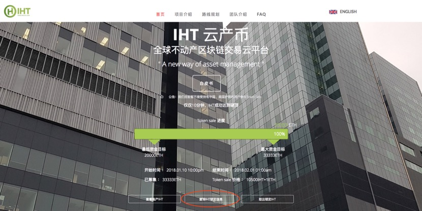
2、请在“查询IHT锁定信息”页面输入您的ETH钱包地址并点击查询。
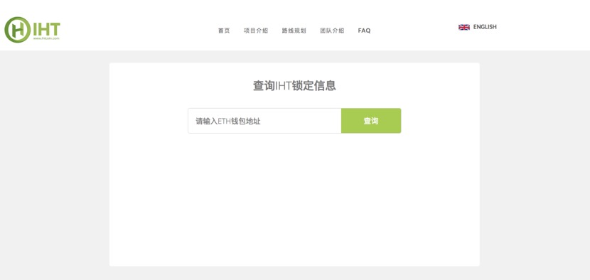
3、查询成功后您将可以查看到您钱包内的IHT 未锁定数量、主体锁定数量、奖励部分锁定数量及锁定时间信息（如加载速度较慢，请耐心等待）。
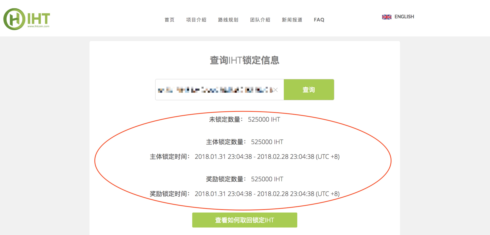
注：锁定的主体部分和奖励部分在锁定期结束后可以取回。取回锁定IHT操作见“如何取回被锁定的IHT ”。
1、请在Chrome浏览器上安装Metamask插件。点击同意用户协议后您将进入创建账户界面。请选择MainNetwork，输入并确认密码后点击“CREATE”。
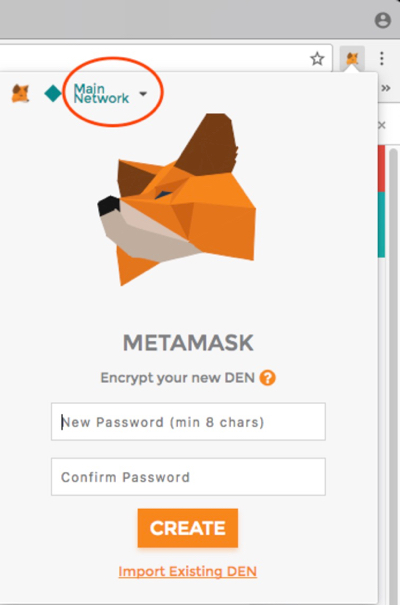
2、请确认保存好SEED WORDS后点击“I’VE COPIED IT SOMEWHERE SAFE”。
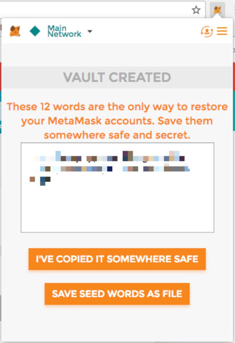
3、请在我的账户界面点击账户按钮，然后点击“Import Account”。
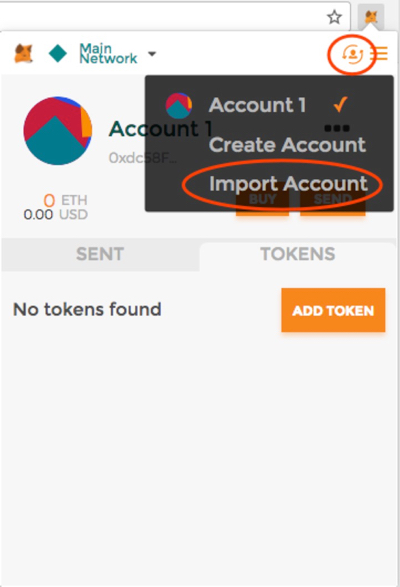
您可以选择输入您购买IHT的ETH私钥 或者 上传Keystore UTC文件并输入密码。
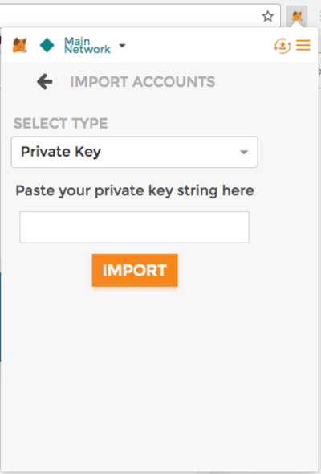

然后，请输入完信息后点击“IMPORT”。随后您将进入自己的ETH钱包。
4、在您的ETH钱包内，请在TOKENS选项下点击“ADD TOKEN”。
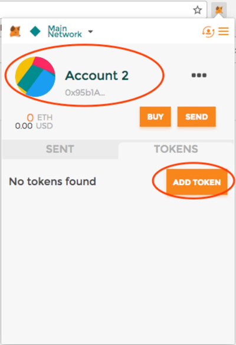
5、请输入以下信息：Token Contract Address：0xEda8B016efA8b1161208Cf041cD86972eeE0F31E Token Symbol： IHT Decimals of Precision：18后点击“Add”
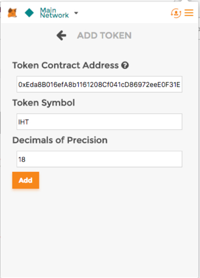
添加成功后您将可以查看到您钱包内的IHT 数量（如加载速度较慢，请耐心等待）。
注：该IHT数量为您购买的IHT未锁定部分，锁定的主体部分和奖励部分在锁定期结束后可以取回。查询锁定部分IHT操作见“如何查询IHT锁定信息”，取回锁定IHT操作见“如何取回被锁定的IHT ”。
1、在https://www.myetherwallet.com/网站上进入自己购买IHT的ETH钱包地址，选择Send Ether & Tokens→MetaMask/Mist→Connect to MetaMask
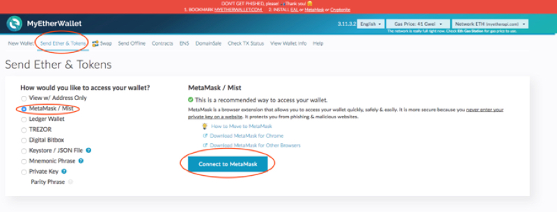
2、请点击“Add Custom Token”请输入以下信息
Token Contract Address：0xEda8B016efA8b1161208Cf041cD86972eeE0F31EToken Symbol： IHTDecimals：18后点击“Save”
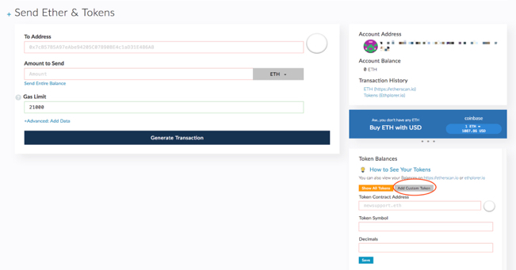
添加成功后您将可以查看您钱包内的IHT 数量（加载速度也许较慢，请耐心等待）
注：该IHT数量为您购买的IHT未锁定部分，锁定的主体部分和奖励部分在锁定期结束后可以取回。查询锁定部分IHT操作见“如何查询IHT锁定信息”，取回锁定IHT操作见“如何取回被锁定的IHT ”。
如何查询IHT锁定信息
1、请在ihtcoin.com官网首页点击“查询IHT锁定信息”按钮。
2、请在“查询IHT锁定信息”页面输入您的ETH钱包地址并点击查询。
3、查询成功后您将可以查看到您钱包内的IHT 主体锁定数量、奖励部分锁定数量及锁定时间信息（如加载速度较慢，请耐心等待）。

锁定到期后如何取回被锁定的IHT
注意：请在锁定期结束后再进行以下操作，用户在锁定期结束前无法取出锁定部分的IHT。
1、在Metamask登录界面，进入自己购买IHT的ETH账号，已添加IHT TOKEN的情况下点击“SEND”（添加TOKEN教程详见“用户如何查看账户上的IHT 方法2”）
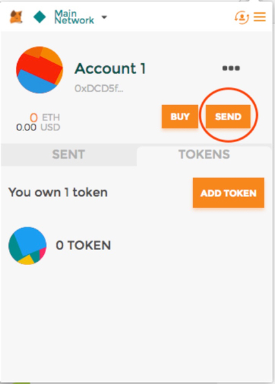
2、请输入以下信息Recipient Address：0x45303f96d6aE172E549fa04311802FF6Bd03b21eAmount：0TRANSACTION DATA(OPTIONAL)：0xf7e77e44点击“NEXT”即可完成取回锁定的IHT

Operation tutorials on how to check IHT in users account, how to check IHT locked up information, and how to retrieve locked up amount of IHT
Requirements
Check IHT in Users Account
1.Please login ihtcoin.com and click “CHECK IHT LOCKUP INFORMATION”.
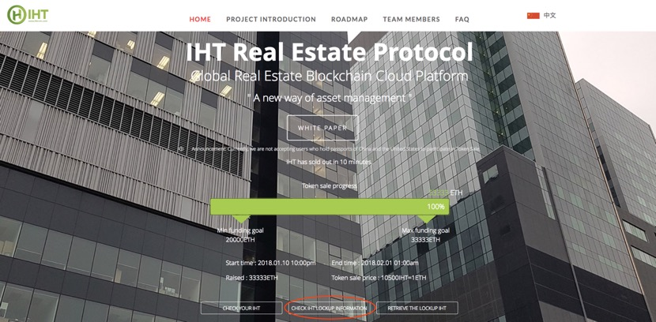
2. Please enter your ETH wallet address and click “CHECK”.
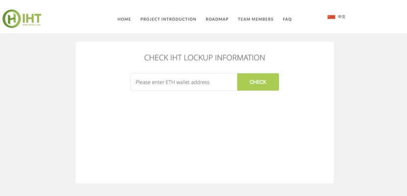
3. After that, you would able to see the IHT unlocked amount, and locked up information. (the speed of loading may be slow, please wait patiently).
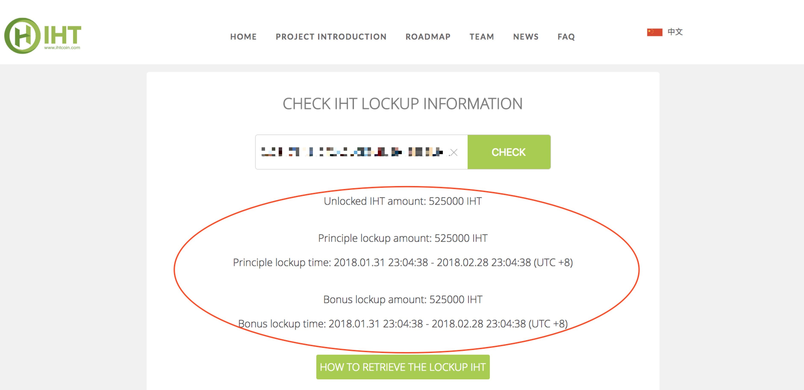
PS: The locked up principle and bonus can only be retrieved after the locked up period. The retrieve operation will be displayed in “How to retrieve the locked up IHT ”。
1. Firstly, please install the Metamask plug-in on Chrome browser and then agree with user agreement. After that, you will enter into the create account interface. Please select MainNetwork, enter and confirm the password and click "CREATE".
2. Please save the SEED WORDS and click "I'VE COPIED IT SOMEWHERE SAFE"
3. Please enter into my account interface and import the ETH wallet address which was used to purchase IHT or the address which was provided to IHT officials by the individual.
You can choose to enter in the private key or upload your keystore UTC file and put in your password.
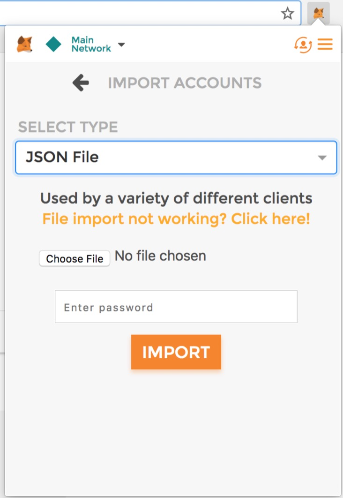
After entering the above information, please click "IMPORT" to enter into your ETH wallet.
4. On your ETH wallet account, please click "ADD TOKEN" in the TOKENS option
5. Please enter in the following information:Token Contract Address：0xEda8B016efA8b1161208Cf041cD86972eeE0F31E Token Symbol： IHT Decimals of Precision：18and click “Add”
After the add is successful you will be able to see the amount of IHT in your account (the speed of loading may be slow, please wait patiently)
PS： You will be able to check the amount of IHT which is not locked up, but the locked up principle and bonus can only be retrieved after the locked up period, which can be checked in “Check IHT locked up amount”,and the retrieve operation will be displayed in “How to retrieve the locked IHT” ”.
1. Please Enter the ETH wallet address on https://www.myetherwallet.com/ chooseSend Ether & Tokens→MetaMask/Mist→Connect to MetaMask
2. Please click “Add Custom Token” Please enter in the following information
Token Contract Address：0xEda8B016efA8b1161208Cf041cD86972eeE0F31EToken Symbol： IHTDecimals：18and click “Save”
After the add is successful, you will be able to see the amount of IHT in your account (the speed of loading may be slow, please wait patiently)
PS： You will be able to check the amount of IHT which is not locked up, but the locked up principle and bonus can only be retrieved after the locked up period, which can be checked in“How to check IHT locked up amount”,and the retrieve operation will be displayed in“How to retrieve the locked up IHT ”.
How to check IHT locked up amount
1. Please login ihtcoin.com and click “CHECK IHT LOCKUP INFORMATION”.

2. Please enter your ETH wallet address and click “CHECK”.
3. After that, you would able to see the IHT principle amount, bonus amount and locked up information. (the speed of loading may be slow, please wait patiently).
How to retrieve the locked up IHT
Attention: please do the following operation after the end of the locked up period.
1. In the Metamask login interface, please enter your ETH wallet address and click "SEND" under the condition that your IHT TOKEN has been added. (The specific operation of adding TOKEN please see“Check IHT in users account method 2”)
2. Please input the following information:Recipient Address：0x45303f96d6aE172E549fa04311802FF6Bd03b21eAmount：0TRANSACTION DATA(OPTIONAL)：0xf7e77e44Please click“NEXT”,then you can retrieve the locked up amount of IHT TOKEN
ユーザのアカウント内のIHT数表示、IHTロック情報照会、ロックされたIHTの取り戻し方法—取扱案内
動作環境
ユーザのアカウント内のIHT表示方法
2.「IHTロック情報照会」画面でお客様のETHウォレットアドレスを入力し、照会をクリックします。
3.照会が成功した場合、お客様のウォレット内のIHT非ロック数量、主体ロック数量、奨励部分ロック数量及びロック時刻情報が表示されます（ロードには時間がかかる場合がありますので、しばらくお待ち下さい）。
ロックされた主体部分と奨励部分はロック期間満了後に取り戻すことができます。ロックIHTの取戻について、 “「ロックされたIHTの取戻方法」をご参照ください。 ”。
1. ChromeブラウザにMetamaskプラグインをインストールします。ユーザ規約に同意をクリックすると、アカウント作成画面が表示されます。MainNetworkを選んで、パスワードを入力し、確認した後、「CREATE」をクリックします。
2. SEED WORDSの保存を確認してから、「I’VE COPIED IT SOMEWHERE SAFE」をクリックします。
3. マイアカウント画面でアカウントボタンをクリックしてから、「Import Account」をクリックします。
ご購入のIHTのETHプライベートキーを入力する、又はKeystore UTCファイルをアップロードし、パスワードを入力することができます。
情報を入力した後、「IMPORT」をクリックすると、お客様のETHウォレットが表示されます。
4. お客様のETHウォレットにおけるTOKENSオプションで「ADD TOKEN」をクリックします。
5. 下記の情報をご入力ください：Token Contract Address：0xEda8B016efA8b1161208Cf041cD86972eeE0F31E Token Symbol： IHT Decimals of Precision：18そして、「Add」をクリックします。
追加が成功した場合、お客様のウォレット内のIHTを表示することができます（ロードには時間がかかる場合がありますので、しばらくお待ち下さい）。
注： 当該IHT数量はご購入のIHTの非ロック部分であり、ロックされた主体部分および奨励部分はロック期間が満了した後に取り戻すことができます。ロック部分のIHT照会について「IHTロック情報照会方法」、IHTの取戻について「ロックされたIHTの取戻方法 」をご参照ください。.
1. https://www.myetherwallet.com/ホームページからご購入のIHTのETHウォレットアドレスを開き、Send Ether & Tokens→MetaMask/Mist→Connect to MetaMaskを選びます
2. 2、「Add Custom Token」をクリックします下記の情報を入力します：
Token Contract Address：0xEda8B016efA8b1161208Cf041cD86972eeE0F31EToken Symbol： IHTDecimals：18そして、「Save」をクリックします
追加が成功した場合、お客様のウォレット内のIHT数量を表示することができます（ロードには時間がかかる場合がありますので、しばらくお待ち下さい）。
注： 当該IHT数量はご購入のIHTの非ロック部分であり、ロックされた主体部分および奨励部分はロック期間が満了した後に取り戻すことができます。ロック部分のIHT照会について「IHTロック情報照会方法」、IHTの取戻について「ロックされたIHTの取戻方法 」をご参照ください。.
IHTロック情報照会方法
1.ihtcoin.com 公式サイトトップページから「IHTロック情報照会」ボタンをクリックします。
2. 「IHTロック情報照会」画面でお客様のETHウォレットアドレスを入力し、照会をクリックします。
3. 照会が成功した場合、お客様のウォレット内のIHT主体ロック数量、奨励部分ロック数量及びロック時刻情報が表示されます（ロードには時間がかかる場合がありますので、しばらくお待ち下さい）。
ロック満期後にロックされたIHTを取り戻す方法
ご注意: 下記の操作を行ってください，ユーザはロック期間の満了前にロック部分のIHTを取り出すことはできません ロック期間満了後に。
1. Metamaskのログイン画面に、ご購入のIHTのETHウォレットを開き、既にIHT TOKENを作成した場合、「SEND」をクリックします（TOKEN追加案内について「ユーザのアカウント内のIHT表示方法2」をご参照ください）
2. 下記の情報を入力しますRecipient Address：0x45303f96d6aE172E549fa04311802FF6Bd03b21eAmount：0TRANSACTION DATA(OPTIONAL)：0xf7e77e44「NEXT」をクリックすると、ロックされたIHTを取り戻すことができます/p>